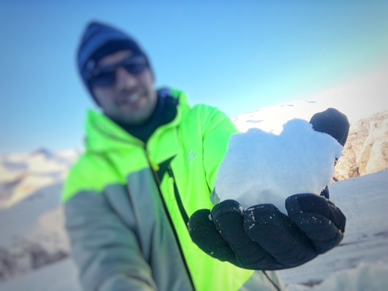

Olá Mundo!
atualizado em agosto/2025 Apesar do interesse antigo no "mundo dos computadores", o meu primeiro contato com a programação foi no início do ano de 2025 quando comecei a cursar Análise e Desenvolvimentos de Sistemas. Como projetos a serem apresentados eu tenho um projeto pessoal que desenvolvi para formatação de currículos, além de outro projeto desenvolvido durante a matéria de Fundamentos da Programação Web. Para acessar os projetos é só clicar nos links ao lado!